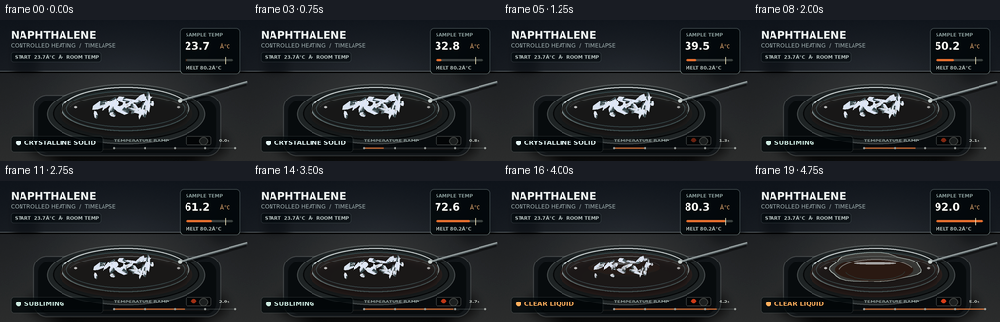
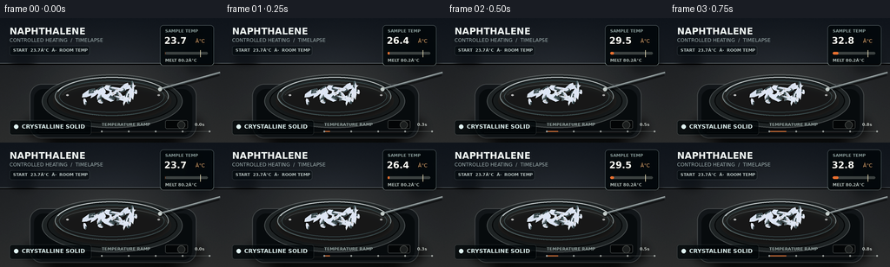

CODING AGENTS AS PIXEL WORLD MODELS
traex/GPT-5.6-Sol · phygen_117
点击播放 · 原生 RGB 像素
逐轮保存的候选
回放视频、检查图与代码变化。
每份候选均可单独播放。实际图片检查记录在下方工具轨迹中。
候选 01播放与检查图
点击播放 · 原生 RGB 像素


展开代码变化
--- 上一保存版本
+++ 本次保存版本
@@ -0,0 +1,317 @@
+from pathlib import Path
+import json, math
+import numpy as np
+from PIL import Image, ImageDraw, ImageFont, ImageFilter
+import artifact_io
+
+CASE_DIR = Path(__file__).resolve().parent
+SPEC = json.loads((CASE_DIR / "task_spec.json").read_text())
+W, H = SPEC["width"], SPEC["height"]
+N = SPEC["frames"]
+S = 4
+WW, HH = W*S, H*S
+RNG = np.random.default_rng(117)
+
+
+def sc(v):
+ if isinstance(v, (tuple, list)):
+ return tuple(int(round(x*S)) for x in v)
+ return int(round(v*S))
+
+
+def font(size, bold=False):
+ name = "DejaVuSans-Bold.ttf" if bold else "DejaVuSans.ttf"
+ return ImageFont.truetype(name, sc(size))
+
+F_TITLE = font(10.5, True)
+F_SMALL = font(5.8, False)
+F_TINY = font(4.8, True)
+F_TEMP = font(10.5, True)
+F_STATE = font(6.5, True)
+
+
+def smoothstep(a, b, x):
+ q = np.clip((x-a)/(b-a), 0.0, 1.0)
+ return q*q*(3-2*q)
+
+
+def layer_rgba():
+ return Image.new("RGBA", (WW, HH), (0, 0, 0, 0))
+
+
+def blurred_shape(draw_fn, radius):
+ im = layer_rgba()
+ d = ImageDraw.Draw(im, "RGBA")
+ draw_fn(d)
+ return im.filter(ImageFilter.GaussianBlur(sc(radius)))
+
+# Fixed crystal definitions in scene coordinates: cx, cy, length, width, angle, melt offset, brightness.
+crystals = []
+for i in range(26):
+ # Dense central pile, with a few loose flakes around it.
+ if i < 20:
+ a = RNG.uniform(0, 2*math.pi)
+ rr = math.sqrt(RNG.random())
+ cx = 126 + math.cos(a)*rr*29
+ cy = 85 + math.sin(a)*rr*10
+ else:
+ cx = RNG.uniform(91, 161)
+ cy = RNG.uniform(78, 97)
+ length = RNG.uniform(9, 22) if i < 18 else RNG.uniform(5, 11)
+ width = RNG.uniform(3.0, 7.2)
+ angle = RNG.uniform(-math.pi, math.pi)
+ threshold = RNG.uniform(78.0, 84.8)
+ bright = RNG.uniform(.84, 1.0)
+ crystals.append((cx, cy, length, width, angle, threshold, bright))
+
+
+def crystal_polygon(cx, cy, length, width, angle, scale=1.0, phase=0.0):
+ # A beveled, irregular naphthalene flake viewed obliquely.
+ L, B = length*scale/2, width*scale/2
+ local = [(-L, -0.35*B), (-.58*L, -B), (.42*L, -.82*B),
+ (L, -.18*B), (.72*L, .72*B), (-.28*L, B), (-L, .30*B)]
+ ca, sa = math.cos(angle), math.sin(angle)
+ return [(sc(cx + x*ca-y*sa), sc(cy + x*sa+y*ca)) for x,y in local]
+
+
+def add_base_scene(frame_index, temp, heat):
+ # Photographic slate lab background with a warm overhead pool of light.
+ yy, xx = np.mgrid[0:HH, 0:WW]
+ x = xx/S; y = yy/S
+ top = np.zeros((HH, WW, 3), dtype=np.float32)
+ horizon = 52
+ # Vertical charcoal gradient; warmer on the bench below the horizon.
+ for c, (a,b) in enumerate([(19,39), (24,42), (31,45)]):
+ top[:,:,c] = a + (b-a)*(y/H)
+ bench = y > horizon
+ top[:,:,0] += bench*7; top[:,:,1] += bench*5; top[:,:,2] += bench*2
+ # Central studio light and a very subtle heated amber cast.
+ spot = np.exp(-(((x-127)/106)**2 + ((y-80)/80)**2)*2.0)
+ top += spot[:,:,None]*np.array([18,18,17])[None,None,:]
+ warm = np.exp(-(((x-128)/76)**2 + ((y-104)/38)**2)*2.2) * heat
+ top += warm[:,:,None]*np.array([10,3,-3])[None,None,:]
+ # Fixed fine grain, not temporal noise (keeps timelapse camera stable).
+ rg = np.random.default_rng(913)
+ grain = rg.normal(0, 1.15, (HH, WW, 1))
+ top += grain
+ img = Image.fromarray(np.uint8(np.clip(top, 0, 255)), "RGB").convert("RGBA")
+ d = ImageDraw.Draw(img, "RGBA")
+ d.line([(0,sc(horizon)),(WW,sc(horizon))], fill=(118,127,131,25), width=sc(.6))
+ d.line([(0,sc(horizon+1.2)),(WW,sc(horizon+1.2))], fill=(0,0,0,38), width=sc(1.2))
+ # Out-of-focus lab silhouettes in the back, for depth.
+ bg = layer_rgba(); bd = ImageDraw.Draw(bg,"RGBA")
+ bd.rounded_rectangle(sc((16,18,37,53)), radius=sc(4), fill=(8,13,19,105))
+ bd.rectangle(sc((21,13,32,20)), fill=(10,16,22,90))
+ bd.ellipse(sc((211,29,245,62)), fill=(7,12,17,90))
+ bd.rectangle(sc((224,13,232,42)), fill=(8,13,18,100))
+ bg = bg.filter(ImageFilter.GaussianBlur(sc(4.5)))
+ img.alpha_composite(bg)
+ return img
+
+
+def draw_hotplate(img, heat):
+ # Soft shadow cast by the instrument.
+ shadow = blurred_shape(lambda d: d.ellipse(sc((29,103,232,151)), fill=(0,0,0,185)), 5.5)
+ img.alpha_composite(shadow)
+ body = layer_rgba(); d = ImageDraw.Draw(body,"RGBA")
+ d.rounded_rectangle(sc((34,76,226,139)), radius=sc(14), fill=(22,26,29,255), outline=(103,111,113,100), width=sc(1))
+ d.rounded_rectangle(sc((39,82,221,136)), radius=sc(11), fill=(12,15,17,255))
+ d.line([sc((45,132)),sc((214,132))], fill=(120,126,125,30), width=sc(1))
+ # Side controls: understated, so the dish remains the subject.
+ d.rounded_rectangle(sc((190,118,216,128)), radius=sc(2), fill=(8,10,11,255), outline=(77,82,82,180), width=sc(.7))
+ if heat > .05:
+ col=(245,72,30,int(90+130*heat))
+ d.ellipse(sc((196,120,201,125)), fill=col)
+ d.ellipse(sc((204,119,213,128)), fill=(31,34,34,255), outline=(112,116,112,150), width=sc(.7))
+ img.alpha_composite(body)
+ # Ceramic heating surface and progressively warmer inner reflection.
+ plate = layer_rgba(); pd = ImageDraw.Draw(plate,"RGBA")
+ pd.ellipse(sc((48,65,210,127)), fill=(34,39,40,255), outline=(134,142,141,125), width=sc(1.1))
+ pd.ellipse(sc((54,69,204,122)), fill=(27,31,32,255), outline=(9,11,12,230), width=sc(1.2))
+ pd.ellipse(sc((61,73,197,118)), fill=(35+int(12*heat),34+int(2*heat),33,255))
+ pd.arc(sc((64,76,194,116)), 184, 350, fill=(198,202,199,50), width=sc(.7))
+ img.alpha_composite(plate)
+ if heat > 0:
+ glow = blurred_shape(lambda d: d.ellipse(sc((71,80,188,114)), outline=(255,80,28,int(55*heat)), width=sc(2.5)), 5)
+ img.alpha_composite(glow)
+
+
+def draw_watch_glass(img, heat):
+ # Glass shadow and transparent watch dish, including inner caustics.
+ img.alpha_composite(blurred_shape(lambda d: d.ellipse(sc((64,76,193,116)), fill=(0,0,0,120)), 3.5))
+ g = layer_rgba(); d = ImageDraw.Draw(g,"RGBA")
+ d.ellipse(sc((63,68,194,113)), fill=(168,202,207,13), outline=(219,239,240,135), width=sc(1.0))
+ d.ellipse(sc((68,72,189,109)), outline=(103,140,145,115), width=sc(.8))
+ d.arc(sc((64,68,194,113)), 195, 342, fill=(248,255,255,200), width=sc(1.1))
+ d.arc(sc((64,68,194,113)), 8, 172, fill=(119,159,163,105), width=sc(.9))
+ d.arc(sc((70,76,188,110)), 194, 340, fill=(255,255,255,50), width=sc(.6))
+ # Bright little rim glints.
+ d.ellipse(sc((76,88,79,90)), fill=(255,255,255,180))
+ d.ellipse(sc((181,88,184,90)), fill=(255,255,255,150))
+ img.alpha_composite(g)
+
+
+def liquid_blob_points(progress):
+ # Perspective-compressed clear liquid pool; irregular outline grows smoothly.
+ rx = 8 + 38*progress
+ ry = 3 + 12*progress
+ pts=[]
+ for k in range(40):
+ a=2*math.pi*k/40
+ wobble=1 + .065*math.sin(3*a+0.8) + .035*math.sin(7*a-1.2)
+ pts.append((sc(127 + rx*wobble*math.cos(a)), sc(88 + ry*wobble*math.sin(a))))
+ return pts
+
+
+def draw_liquid(img, melt, temp):
+ if melt <= .01: return
+ # Clear naphthalene liquid: visible mainly through refraction, amber hotplate tint, and specular rim.
+ sh = blurred_shape(lambda d: d.polygon(liquid_blob_points(melt), fill=(0,0,0,int(75*melt))), 2.0)
+ img.alpha_composite(sh)
+ liq=layer_rgba(); d=ImageDraw.Draw(liq,"RGBA")
+ pts=liquid_blob_points(melt)
+ d.polygon(pts, fill=(202,220,211,int(23+24*melt)))
+ d.line(pts+[pts[0]], fill=(231,247,239,int(80+95*melt)), width=sc(.75))
+ # Warm refracted underside and liquid meniscus.
+ d.ellipse(sc((91-4*melt,83-4*melt,163+4*melt,94+8*melt)), fill=(235,105,48,int(11+16*melt)))
+ d.arc(sc((93-3*melt,79,165+3*melt,99+7*melt)), 190, 342, fill=(255,255,248,int(105*melt)), width=sc(1.1))
+ d.arc(sc((97,82,159,96+5*melt)), 6, 170, fill=(112,149,143,int(70*melt)), width=sc(.7))
+ # Specular streak on the colorless melt.
+ d.ellipse(sc((107,83,141+8*melt,85.2)), fill=(255,255,255,int(65+90*melt)))
+ img.alpha_composite(liq)
+
+
+def draw_crystals(img, temp, sublimation, melt):
+ # Sort by y to imply a pile. Each flake has its own staggered melt temperature.
+ shadow=layer_rgba(); sd=ImageDraw.Draw(shadow,"RGBA")
+ states=[]
+ for i,c in enumerate(crystals):
+ cx,cy,L,B,ang,threshold,bright=c
+ solid = 1.0 - smoothstep(threshold-1.5, threshold+6.0, temp)
+ scale=(1-.20*sublimation)*(0.15+.85*solid)
+ if solid > .025:
+ poly=crystal_polygon(cx,cy,L,B,ang,scale)
+ sd.polygon(poly, fill=(0,0,0,int(85*solid)))
+ states.append((cy,i,poly,solid,scale,c))
+ shadow=shadow.filter(ImageFilter.GaussianBlur(sc(1.4)))
+ img.alpha_composite(shadow)
+ cry=layer_rgba(); d=ImageDraw.Draw(cry,"RGBA")
+ for _,i,poly,solid,scale,c in sorted(states):
+ cx,cy,L,B,ang,threshold,bright=c
+ base=int(185+55*bright)
+ # More translucency and rounded-looking reduced contrast as melting begins.
+ alpha=int(135+115*solid)
+ cool=(int(base*.93),int(base*.97),min(255,base+9),alpha)
+ d.polygon(poly, fill=cool, outline=(250,255,255,int(105+130*solid)))
+ # Dark lower facet and bright cleavage plane create dimensional crystals.
+ centroid=(sum(p[0] for p in poly)//len(poly),sum(p[1] for p in poly)//len(poly))
+ facet=[poly[0],poly[-1],poly[-2],centroid]
+ d.polygon(facet, fill=(105,142,151,int(48+65*solid)))
+ ca,sa=math.cos(ang),math.sin(ang)
+ x1=cx-L*scale*.32*ca; y1=cy-L*scale*.32*sa
+ x2=cx+L*scale*.38*ca; y2=cy+L*scale*.38*sa
+ d.line([sc((x1,y1)),sc((x2,y2))], fill=(255,255,255,int(115+115*solid)), width=max(1,sc(.48)))
+ if i%4==0 and solid>.45:
+ d.ellipse(sc((cx-1.0,cy-1.0,cx+1.0,cy+1.0)), fill=(255,255,255,190))
+ img.alpha_composite(cry)
+
+
+def draw_vapor_and_heat(img, frame_index, temp, vapor):
+ # Naphthalene vapor itself is invisible; very subtle optical/haze wisps communicate accelerated sublimation.
+ if vapor < .08: return
+ wisps=layer_rgba(); d=ImageDraw.Draw(wisps,"RGBA")
+ for j in range(5):
+ phase=j*1.37 + frame_index*.28
+ base_x=101+j*13 + 2.2*math.sin(phase)
+ base_y=80+j%2*3
+ pts=[]
+ for q in range(18):
+ u=q/17
+ x=base_x + math.sin(u*5.5+phase)*3.1 + u*math.sin(phase*0.7)*5
+ y=base_y-u*(18+6*math.sin(j))
+ pts.append(sc((x,y)))
+ d.line(pts, fill=(223,238,234,int((12+24*vapor)*(1-j*.09))), width=sc(.7+vapor*.5))
+ wisps=wisps.filter(ImageFilter.GaussianBlur(sc(1.2)))
+ img.alpha_composite(wisps)
+
+
+def draw_probe(img):
+ # Slim stainless temperature probe aimed at the sample, stopping beside the dish.
+ sh=layer_rgba(); d=ImageDraw.Draw(sh,"RGBA")
+ d.line([sc((252,65)),sc((184,84))], fill=(0,0,0,100), width=sc(3.8))
+ d.line([sc((253,63)),sc((184,82))], fill=(91,101,103,255), width=sc(2.4))
+ d.line([sc((253,62.4)),sc((184,81.4))], fill=(218,225,223,225), width=sc(.65))
+ d.ellipse(sc((181.8,80,186.2,84.5)), fill=(193,203,200,255), outline=(245,250,247,180), width=sc(.5))
+ img.alpha_composite(sh)
+
+
+def draw_ui(img, temp, t, state, heat):
+ ui=layer_rgba(); d=ImageDraw.Draw(ui,"RGBA")
+ # Upper-left documentary title.
+ d.text(sc((11,9)), "NAPHTHALENE", font=F_TITLE, fill=(243,248,245,245))
+ d.text(sc((11,22)), "CONTROLLED HEATING / TIMELAPSE", font=F_SMALL, fill=(172,189,189,225))
+ d.rounded_rectangle(sc((11,32,103,43)), radius=sc(2.5), fill=(4,10,13,135), outline=(155,175,175,45), width=sc(.5))
+ d.text(sc((15,34.2)), "START 23.7°C · ROOM TEMP", font=F_TINY, fill=(206,219,216,225))
+ # Temperature instrument panel.
+ d.rounded_rectangle(sc((184,8,246,55)), radius=sc(4), fill=(5,10,12,205), outline=(164,184,180,75), width=sc(.8))
+ d.text(sc((190,12)), "SAMPLE TEMP", font=F_TINY, fill=(144,164,162,240))
+ d.text(sc((189,20)), f"{temp:04.1f}", font=F_TEMP, fill=(252,252,244,255))
+ d.text(sc((225,23)), "°C", font=F_SMALL, fill=(235,175,116,255))
+ # Ramp bar with a distinct melt point marker.
+ x0,x1=190,239; y=39
+ d.rounded_rectangle(sc((x0,y,x1,y+3)), radius=sc(1.5), fill=(70,76,74,210))
+ frac=np.clip((temp-23.7)/(92-23.7),0,1)
+ d.rounded_rectangle(sc((x0,y,x0+(x1-x0)*frac,y+3)), radius=sc(1.5), fill=(238,116,50,245))
+ mx=x0+(x1-x0)*(80.2-23.7)/(92-23.7)
+ d.line([sc((mx,y-2)),sc((mx,y+6))], fill=(255,244,201,230), width=sc(.65))
+ d.text(sc((190,46)), "MELT 80.2°C", font=F_TINY, fill=(190,202,197,230))
+ # Bottom state ribbon and timeline.
+ d.rounded_rectangle(sc((11,118,105,135)), radius=sc(3), fill=(5,10,12,190), outline=(145,165,163,50), width=sc(.6))
+ state_colors={"CRYSTALLINE SOLID":(222,240,239,255),"SUBLIMING":(202,230,221,255),"SOFTENING":(250,203,137,255),"CLEAR LIQUID":(252,174,94,255)}
+ d.ellipse(sc((16,123,21,128)), fill=state_colors[state])
+ d.text(sc((25,121.5)), state, font=F_STATE, fill=state_colors[state])
+ # Minimal progress track along bottom edge.
+ d.line([sc((117,131)),sc((241,131))], fill=(171,184,180,65), width=sc(.8))
+ d.line([sc((117,131)),sc((117+124*t,131))], fill=(232,126,63,210), width=sc(1.15))
+ for k in range(5):
+ x=117+124*k/4
+ d.ellipse(sc((x-1.1,129.9,x+1.1,132.1)), fill=(218,225,219,170))
+ d.text(sc((117,120.2)), "TEMPERATURE RAMP", font=F_TINY, fill=(167,183,180,210))
+ d.text(sc((224,120.2)), f"{t*5:03.1f}s", font=F_TINY, fill=(214,220,214,220))
+ img.alpha_composite(ui)
+
+
+def render(i):
+ t=i/(N-1)
+ # Gentle monotonic rise, starting explicitly at room temperature.
+ temp=23.7 + (92.0-23.7)*(0.20*t + 0.80*(t**1.12))
+ heat=smoothstep(27,92,temp)
+ sub=smoothstep(31,76,temp)
+ melt=smoothstep(76.0,91.5,temp)
+ vapor=smoothstep(43,88,temp)
+ if temp < 43: state="CRYSTALLINE SOLID"
+ elif temp < 76: state="SUBLIMING"
+ elif temp < 80.2: state="SOFTENING"
+ else: state="CLEAR LIQUID"
+ img=add_base_scene(i,temp,heat)
+ draw_hotplate(img,heat)
+ draw_watch_glass(img,heat)
+ draw_liquid(img,melt,temp)
+ draw_crystals(img,temp,sub,melt)
+ draw_vapor_and_heat(img,i,temp,vapor)
+ draw_probe(img)
+ draw_ui(img,temp,t,state,heat)
+ # Filmic contrast and final antialiasing.
+ arr=np.asarray(img.convert("RGB").resize((W,H),Image.Resampling.LANCZOS)).astype(np.float32)
+ arr=(arr-128)*1.035+128
+ arr=np.clip(arr,0,255).astype(np.uint8)
+ return arr
+
+
+def main():
+ frames=np.stack([render(i) for i in range(N)], axis=0)
+ artifact_io.save(frames, CASE_DIR)
+ print(f"saved {frames.shape[0]} RGB frames at {frames.shape[2]}x{frames.shape[1]}")
+
+if __name__ == "__main__":
+ main()
可观测工具轨迹
实际执行的命令与返回图片。
命令 1exit 0
/bin/bash -lc "cat prompt.txt && printf '\\n--- GENERATION_RULES.md ---\\n' && cat GENERATION_RULES.md"
命令 2exit 0
/bin/bash -lc "cat task_spec.json && printf '\\n--- FILES ---\\n' && find . -maxdepth 2 -type f -printf '%p %s bytes\\n' | sort"
命令 3exit 0
/bin/bash -lc "command -v ffmpeg || true; command -v blender || true; python3 - <<'PY' mods=['numpy','PIL','cv2','imageio','cairo','moderngl'] for m in mods: try: x=__import__(m); print(m,'OK',getattr(x,'__version__','')) except Exception as e: print(m,'NO',type(e).__name__) PY"
命令 4exit 0
/bin/bash -lc "sed -n '1,260p' artifact_io.py"
命令 5exit 0
/bin/bash -lc "cat > generate.py <<'PY'
from pathlib import Path
import json, math
import numpy as np
from PIL import Image, ImageDraw, ImageFont, ImageFilter
import artifact_io
CASE_DIR = Path(__file__).resolve().parent
SPEC = json.loads((CASE_DIR / \"task_spec.json\").read_text())
W, H = SPEC[\"width\"], SPEC[\"height\"]
N = SPEC[\"frames\"]
S = 4
WW, HH = W*S, H*S
RNG = np.random.default_rng(117)
def sc(v):
if isinstance(v, (tuple, list)):
return tuple(int(round(x*S)) for x in v)
return int(round(v*S))
def font(size, bold=False):
name = \"DejaVuSans-Bold.ttf\" if bold else \"DejaVuSans.ttf\"
return ImageFont.truetype(name, sc(size))
F_TITLE = font(10.5, True)
F_SMALL = font(5.8, False)
F_TINY = font(4.8, True)
F_TEMP = font(10.5, True)
F_STATE = font(6.5, True)
def smoothstep(a, b, x):
q = np.clip((x-a)/(b-a), 0.0, 1.0)
return q*q*(3-2*q)
def layer_rgba():
return Image.new(\"RGBA\", (WW, HH), (0, 0, 0, 0))
def blurred_shape(draw_fn, radius):
im = layer_rgba()
d = ImageDraw.Draw(im, \"RGBA\")
draw_fn(d)
return im.filter(ImageFilter.GaussianBlur(sc(radius)))
# Fixed crystal definitions in scene coordinates: cx, cy, length, width, angle, melt offset, brightness.
crystals = []
for i in range(26):
# Dense central pile, with a few loose flakes around it.
if i < 20:
a = RNG.uniform(0, 2*math.pi)
rr = math.sqrt(RNG.random())
cx = 126 + math.cos(a)*rr*29
cy = 85 + math.sin(a)*rr*10
else:
cx = RNG.uniform(91, 161)
cy = RNG.uniform(78, 97)
length = RNG.uniform(9, 22) if i < 18 else RNG.uniform(5, 11)
width = RNG.uniform(3.0, 7.2)
angle = RNG.uniform(-math.pi, math.pi)
threshold = RNG.uniform(78.0, 84.8)
bright = RNG.uniform(.84, 1.0)
crystals.append((cx, cy, length, width, angle, threshold, bright))
def crystal_polygon(cx, cy, length, width, angle, scale=1.0, phase=0.0):
# A beveled, irregular naphthalene flake viewed obliquely.
L, B = length*scale/2, width*scale/2
local = [(-L, -0.35*B), (-.58*L, -B), (.42*L, -.82*B),
(L, -.18*B), (.72*L, .72*B), (-.28*L, B), (-L, .30*B)]
ca, sa = math.cos(angle), math.sin(angle)
return [(sc(cx + x*ca-y*sa), sc(cy + x*sa+y*ca)) for x,y in local]
def add_base_scene(frame_index, temp, heat):
# Photographic slate lab background with a warm overhead pool of light.
yy, xx = np.mgrid[0:HH, 0:WW]
x = xx/S; y = yy/S
top = np.zeros((HH, WW, 3), dtype=np.float32)
horizon = 52
# Vertical charcoal gradient; warmer on the bench below the horizon.
for c, (a,b) in enumerate([(19,39), (24,42), (31,45)]):
top[:,:,c] = a + (b-a)*(y/H)
bench = y > horizon
top[:,:,0] += bench*7; top[:,:,1] += bench*5; top[:,:,2] += bench*2
# Central studio light and a very subtle heated amber cast.
spot = np.exp(-(((x-127)/106)**2 + ((y-80)/80)**2)*2.0)
top += spot[:,:,None]*np.array([18,18,17])[None,None,:]
warm = np.exp(-(((x-128)/76)**2 + ((y-104)/38)**2)*2.2) * heat
top += warm[:,:,None]*np.array([10,3,-3])[None,None,:]
# Fixed fine grain, not temporal noise (keeps timelapse camera stable).
rg = np.random.default_rng(913)
grain = rg.normal(0, 1.15, (HH, WW, 1))
top += grain
img = Image.fromarray(np.uint8(np.clip(top, 0, 255)), \"RGB\").convert(\"RGBA\")
d = ImageDraw.Draw(img, \"RGBA\")
d.line([(0,sc(horizon)),(WW,sc(horizon))], fill=(118,127,131,25), width=sc(.6))
d.line([(0,sc(horizon+1.2)),(WW,sc(horizon+1.2))], fill=(0,0,0,38), width=sc(1.2))
# Out-of-focus lab silhouettes in the back, for depth.
bg = layer_rgba(); bd = ImageDraw.Draw(bg,\"RGBA\")
bd.rounded_rectangle(sc((16,18,37,53)), radius=sc(4), fill=(8,13,19,105))
bd.rectangle(sc((21,13,32,20)), fill=(10,16,22,90))
bd.ellipse(sc((211,29,245,62)), fill=(7,12,17,90))
bd.rectangle(sc((224,13,232,42)), fill=(8,13,18,100))
bg = bg.filter(ImageFilter.GaussianBlur(sc(4.5)))
img.alpha_composite(bg)
return img
def draw_hotplate(img, heat):
# Soft shadow cast by the instrument.
shadow = blurred_shape(lambda d: d.ellipse(sc((29,103,232,151)), fill=(0,0,0,185)), 5.5)
img.alpha_composite(shadow)
body = layer_rgba(); d = ImageDraw.Draw(body,\"RGBA\")
d.rounded_rectangle(sc((34,76,226,139)), radius=sc(14), fill=(22,26,29,255), outline=(103,111,113,100), width=sc(1))
d.rounded_rectangle(sc((39,82,221,136)), radius=sc(11), fill=(12,15,17,255))
d.line([sc((45,132)),sc((214,132))], fill=(120,126,125,30), width=sc(1))
# Side controls: understated, so the dish remains the subject.
d.rounded_rectangle(sc((190,118,216,128)), radius=sc(2), fill=(8,10,11,255), outline=(77,82,82,180), width=sc(.7))
if heat > .05:
col=(245,72,30,int(90+130*heat))
d.ellipse(sc((196,120,201,125)), fill=col)
d.ellipse(sc((204,119,213,128)), fill=(31,34,34,255), outline=(112,116,112,150), width=sc(.7))
img.alpha_composite(body)
# Ceramic heating surface and progressively warmer inner reflection.
plate = layer_rgba(); pd = ImageDraw.Draw(plate,\"RGBA\")
pd.ellipse(sc((48,65,210,127)), fill=(34,39,40,255), outline=(134,142,141,125), width=sc(1.1))
pd.ellipse(sc((54,69,204,122)), fill=(27,31,32,255), outline=(9,11,12,230), width=sc(1.2))
pd.ellipse(sc((61,73,197,118)), fill=(35+int(12*heat),34+int(2*heat),33,255))
pd.arc(sc((64,76,194,116)), 184, 350, fill=(198,202,199,50), width=sc(.7))
img.alpha_composite(plate)
if heat > 0:
glow = blurred_shape(lambda d: d.ellipse(sc((71,80,188,114)), outline=(255,80,28,int(55*heat)), width=sc(2.5)), 5)
img.alpha_composite(glow)
def draw_watch_glass(img, heat):
# Glass shadow and transparent watch dish, including inner caustics.
img.alpha_composite(blurred_shape(lambda d: d.ellipse(sc((64,76,193,116)), fill=(0,0,0,120)), 3.5))
g = layer_rgba(); d = ImageDraw.Draw(g,\"RGBA\")
d.ellipse(sc((63,68,194,113)), fill=(168,202,207,13), outline=(219,239,240,135), width=sc(1.0))
d.ellipse(sc((68,72,189,109)), outline=(103,140,145,115), width=sc(.8))
d.arc(sc((64,68,194,113)), 195, 342, fill=(248,255,255,200), width=sc(1.1))
d.arc(sc((64,68,194,113)), 8, 172, fill=(119,159,163,105), width=sc(.9))
d.arc(sc((70,76,188,110)), 194, 340, fill=(255,255,255,50), width=sc(.6))
# Bright little rim glints.
d.ellipse(sc((76,88,79,90)), fill=(255,255,255,180))
d.ellipse(sc((181,88,184,90)), fill=(255,255,255,150))
img.alpha_composite(g)
def liquid_blob_points(progress):
# Perspective-compressed clear liquid pool; irregular outline grows smoothly.
rx = 8 + 38*progress
ry = 3 + 12*progress
pts=[]
for k in range(40):
a=2*math.pi*k/40
wobble=1 + .065*math.sin(3*a+0.8) + .035*math.sin(7*a-1.2)
pts.append((sc(127 + rx*wobble*math.cos(a)), sc(88 + ry*wobble*math.sin(a))))
return pts
def draw_liquid(img, melt, temp):
if melt <= .01: return
# Clear naphthalene liquid: visible mainly through refraction, amber hotplate tint, and specular rim.
sh = blurred_shape(lambda d: d.polygon(liquid_blob_points(melt), fill=(0,0,0,int(75*melt))), 2.0)
img.alpha_composite(sh)
liq=layer_rgba(); d=ImageDraw.Draw(liq,\"RGBA\")
pts=liquid_blob_points(melt)
d.polygon(pts, fill=(202,220,211,int(23+24*melt)))
d.line(pts+[pts[0]], fill=(231,247,239,int(80+95*melt)), width=sc(.75))
# Warm refracted underside and liquid meniscus.
d.ellipse(sc((91-4*melt,83-4*melt,163+4*melt,94+8*melt)), fill=(235,105,48,int(11+16*melt)))
d.arc(sc((93-3*melt,79,165+3*melt,99+7*melt)), 190, 342, fill=(255,255,248,int(105*melt)), width=sc(1.1))
d.arc(sc((97,82,159,96+5*melt)), 6, 170, fill=(112,149,143,int(70*melt)), width=sc(.7))
# Specular streak on the colorless melt.
d.ellipse(sc((107,83,141+8*melt,85.2)), fill=(255,255,255,int(65+90*melt)))
img.alpha_composite(liq)
def draw_crystals(img, temp, sublimation, melt):
# Sort by y to imply a pile. Each flake has its own staggered melt temperature.
shadow=layer_rgba(); sd=ImageDraw.Draw(shadow,\"RGBA\")
states=[]
for i,c in enumerate(crystals):
cx,cy,L,B,ang,threshold,bright=c
solid = 1.0 - smoothstep(threshold-1.5, threshold+6.0, temp)
scale=(1-.20*sublimation)*(0.15+.85*solid)
if solid > .025:
poly=crystal_polygon(cx,cy,L,B,ang,scale)
sd.polygon(poly, fill=(0,0,0,int(85*solid)))
states.append((cy,i,poly,solid,scale,c))
shadow=shadow.filter(ImageFilter.GaussianBlur(sc(1.4)))
img.alpha_composite(shadow)
cry=layer_rgba(); d=ImageDraw.Draw(cry,\"RGBA\")
for _,i,poly,solid,scale,c in sorted(states):
cx,cy,L,B,ang,threshold,bright=c
base=int(185+55*bright)
# More translucency and rounded-looking reduced contrast as melting begins.
alpha=int(135+115*solid)
cool=(int(base*.93),int(base*.97),min(255,base+9),alpha)
d.polygon(poly, fill=cool, outline=(250,255,255,int(105+130*solid)))
# Dark lower facet and bright cleavage plane create dimensional crystals.
centroid=(sum(p[0] for p in poly)//len(poly),sum(p[1] for p in poly)//len(poly))
facet=[poly[0],poly[-1],poly[-2],centroid]
d.polygon(facet, fill=(105,142,151,int(48+65*solid)))
ca,sa=math.cos(ang),math.sin(ang)
x1=cx-L*scale*.32*ca; y1=cy-L*scale*.32*sa
x2=cx+L*scale*.38*ca; y2=cy+L*scale*.38*sa
d.line([sc((x1,y1)),sc((x2,y2))], fill=(255,255,255,int(115+115*solid)), width=max(1,sc(.48)))
if i%4==0 and solid>.45:
d.ellipse(sc((cx-1.0,cy-1.0,cx+1.0,cy+1.0)), fill=(255,255,255,190))
img.alpha_composite(cry)
def draw_vapor_and_heat(img, frame_index, temp, vapor):
# Naphthalene vapor itself is invisible; very subtle optical/haze wisps communicate accelerated sublimation.
if vapor < .08: return
wisps=layer_rgba(); d=ImageDraw.Draw(wisps,\"RGBA\")
for j in range(5):
phase=j*1.37 + frame_index*.28
base_x=101+j*13 + 2.2*math.sin(phase)
base_y=80+j%2*3
pts=[]
for q in range(18):
u=q/17
x=base_x + math.sin(u*5.5+phase)*3.1 + u*math.sin(phase*0.7)*5
y=base_y-u*(18+6*math.sin(j))
pts.append(sc((x,y)))
d.line(pts, fill=(223,238,234,int((12+24*vapor)*(1-j*.09))), width=sc(.7+vapor*.5))
wisps=wisps.filter(ImageFilter.GaussianBlur(sc(1.2)))
img.alpha_composite(wisps)
def draw_probe(img):
# Slim stainless temperature probe aimed at the sample, stopping beside the dish.
sh=layer_rgba(); d=ImageDraw.Draw(sh,\"RGBA\")
d.line([sc((252,65)),sc((184,84))], fill=(0,0,0,100), width=sc(3.8))
d.line([sc((253,63)),sc((184,82))], fill=(91,101,103,255), width=sc(2.4))
d.line([sc((253,62.4)),sc((184,81.4))], fill=(218,225,223,225), width=sc(.65))
d.ellipse(sc((181.8,80,186.2,84.5)), fill=(193,203,200,255), outline=(245,250,247,180), width=sc(.5))
img.alpha_composite(sh)
def draw_ui(img, temp, t, state, heat):
ui=layer_rgba(); d=ImageDraw.Draw(ui,\"RGBA\")
# Upper-left documentary title.
d.text(sc((11,9)), \"NAPHTHALENE\", font=F_TITLE, fill=(243,248,245,245))
d.text(sc((11,22)), \"CONTROLLED HEATING / TIMELAPSE\", font=F_SMALL, fill=(172,189,189,225))
d.rounded_rectangle(sc((11,32,103,43)), radius=sc(2.5), fill=(4,10,13,135), outline=(155,175,175,45), width=sc(.5))
d.text(sc((15,34.2)), \"START 23.7°C · ROOM TEMP\", font=F_TINY, fill=(206,219,216,225))
# Temperature instrument panel.
d.rounded_rectangle(sc((184,8,246,55)), radius=sc(4), fill=(5,10,12,205), outline=(164,184,180,75), width=sc(.8))
d.text(sc((190,12)), \"SAMPLE TEMP\", font=F_TINY, fill=(144,164,162,240))
d.text(sc((189,20)), f\"{temp:04.1f}\", font=F_TEMP, fill=(252,252,244,255))
d.text(sc((225,23)), \"°C\", font=F_SMALL, fill=(235,175,116,255))
# Ramp bar with a distinct melt point marker.
x0,x1=190,239; y=39
d.rounded_rectangle(sc((x0,y,x1,y+3)), radius=sc(1.5), fill=(70,76,74,210))
frac=np.clip((temp-23.7)/(92-23.7),0,1)
d.rounded_rectangle(sc((x0,y,x0+(x1-x0)*frac,y+3)), radius=sc(1.5), fill=(238,116,50,245))
mx=x0+(x1-x0)*(80.2-23.7)/(92-23.7)
d.line([sc((mx,y-2)),sc((mx,y+6))], fill=(255,244,201,230), width=sc(.65))
d.text(sc((190,46)), \"MELT 80.2°C\", font=F_TINY, fill=(190,202,197,230))
# Bottom state ribbon and timeline.
d.rounded_rectangle(sc((11,118,105,135)), radius=sc(3), fill=(5,10,12,190), outline=(145,165,163,50), width=sc(.6))
state_colors={\"CRYSTALLINE SOLID\":(222,240,239,255),\"SUBLIMING\":(202,230,221,255),\"SOFTENING\":(250,203,137,255),\"CLEAR LIQUID\":(252,174,94,255)}
d.ellipse(sc((16,123,21,128)), fill=state_colors[state])
d.text(sc((25,121.5)), state, font=F_STATE, fill=state_colors[state])
# Minimal progress track along bottom edge.
d.line([sc((117,131)),sc((241,131))], fill=(171,184,180,65), width=sc(.8))
d.line([sc((117,131)),sc((117+124*t,131))], fill=(232,126,63,210), width=sc(1.15))
for k in range(5):
x=117+124*k/4
d.ellipse(sc((x-1.1,129.9,x+1.1,132.1)), fill=(218,225,219,170))
d.text(sc((117,120.2)), \"TEMPERATURE RAMP\", font=F_TINY, fill=(167,183,180,210))
d.text(sc((224,120.2)), f\"{t*5:03.1f}s\", font=F_TINY, fill=(214,220,214,220))
img.alpha_composite(ui)
def render(i):
t=i/(N-1)
# Gentle monotonic rise, starting explicitly at room temperature.
temp=23.7 + (92.0-23.7)*(0.20*t + 0.80*(t**1.12))
heat=smoothstep(27,92,temp)
sub=smoothstep(31,76,temp)
melt=smoothstep(76.0,91.5,temp)
vapor=smoothstep(43,88,temp)
if temp < 43: state=\"CRYSTALLINE SOLID\"
elif temp < 76: state=\"SUBLIMING\"
elif temp < 80.2: state=\"SOFTENING\"
else: state=\"CLEAR LIQUID\"
img=add_base_scene(i,temp,heat)
draw_hotplate(img,heat)
draw_watch_glass(img,heat)
draw_liquid(img,melt,temp)
draw_crystals(img,temp,sub,melt)
draw_vapor_and_heat(img,i,temp,vapor)
draw_probe(img)
draw_ui(img,temp,t,state,heat)
# Filmic contrast and final antialiasing.
arr=np.asarray(img.convert(\"RGB\").resize((W,H),Image.Resampling.LANCZOS)).astype(np.float32)
arr=(arr-128)*1.035+128
arr=np.clip(arr,0,255).astype(np.uint8)
return arr
def main():
frames=np.stack([render(i) for i in range(N)], axis=0)
artifact_io.save(frames, CASE_DIR)
print(f\"saved {frames.shape[0]} RGB frames at {frames.shape[2]}x{frames.shape[1]}\")
if __name__ == \"__main__\":
main()
PY
python3 generate.py
python3 - <<'PY'
from pathlib import Path
import numpy as np
from PIL import Image
p=Path('.')
z=np.load('pixels.npz')['pixels']
print('pixels',z.shape,z.dtype,'bytes',Path('pixels.npz').stat().st_size)
for i in [0,5,10,15,19]:
a=np.array(Image.open(f'frames/{i:02d}.png'))
print(i,a.shape,a.dtype,round(float(a.mean()),2),len(np.unique(a.reshape(-1,3),axis=0)))
print('artifacts:',[(x.name,x.stat().st_size) for x in [Path('index.html'),Path('inspection.png'),Path('transition_check.png')]])
PY"命令 6exit 0
/bin/bash -lc "python3 - <<'PY'
p='generate.py'
s=open(p).read()
s=s.replace('ðC','°C').replace('÷','·')
open(p,'w').write(s)
# report ramp and transition staging
import math, numpy as np
for i in range(20):
t=i/19
temp=23.7+(92-23.7)*(.20*t+.80*t**1.12)
q=np.clip((temp-76)/(91.5-76),0,1); melt=q*q*(3-2*q)
print(f'{i:02d} {i/4:4.2f}s {temp:5.1f}C melt={melt:.2f}')
PY
python3 generate.py
python3 - <<'PY'
import ast, pathlib, numpy as np
from PIL import Image
src=pathlib.Path('generate.py').read_text()
ast.parse(src)
fs=sorted(pathlib.Path('frames').glob('*.png'))
assert len(fs)==20
ims=np.stack([np.asarray(Image.open(f).convert('RGB')) for f in fs])
assert ims.shape==(20,144,256,3) and ims.dtype==np.uint8
mad=np.abs(np.diff(ims.astype(np.int16),axis=0)).mean(axis=(1,2,3))
print('shape/dtype:',ims.shape,ims.dtype)
print('adjacent MAD:',np.round(mad,2).tolist())
print('first-to-last MAD:',round(float(np.abs(ims[-1].astype(int)-ims[0].astype(int)).mean()),2))
print('all required:',all(pathlib.Path(x).exists() for x in ['pixels.npz','index.html','inspection.png','transition_check.png']))
PY"命令 7exit 0
/bin/bash -lc "grep -n \"TEMP\\|START\\|MELT\" generate.py | tail -8; git status --short 2>/dev/null || true; find frames -type f | wc -l; ls -lh generate.py pixels.npz index.html inspection.png transition_check.png"
保存候选 1 份；完成命令 7 次；可验证图片返回 0 张。原始 API 响应与完整日志保留在本地。